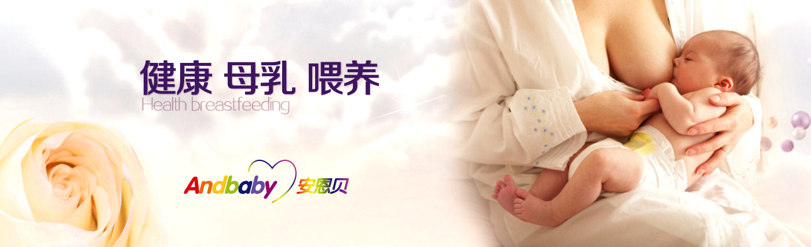

专业通络催乳、乳房疏通、停奶回乳
催乳师是指经专业培训机构培训、通过乳腺管及周边穴位按摩的手法，解决产妇产后无乳、乳少、乳房胀痛、乳汁淤积、乳腺管阻塞、急性乳腺炎等哺乳期乳腺症状的专业乳房护理专家，上述症状经催乳师专业疏通按摩后基本可一次解决。
安贝儿专业催乳服务机构以无乳、缺乳、少乳的产妇为服务对象，采用传统和科学的乳房周围按摩的方法，为产褥期的女性疏通乳腺管、达到生乳泌乳之功效。同时具有缓解产妇的乳腺增生、乳房肿块、以及乳腺炎症等功效。
绿色健康，安全可靠:
不打针、不吃药。遵从理气活血、舒筋通络的原则，采用点、按、揉、拿等手法抚摩穴位以达到催乳目的，相对其它方法更安全。
针对性强，效果好:
专门针对产后乳汁分泌的问题，如乳房胀痛、有奶吃不出、乳房肿块、无奶、奶少等情况，效果很好。
时间短，很快见效:
不管是外敷还是饮食，都需要一定的时间，而利用安贝儿通络催乳可迅速解决乳痛、乳胀、乳汁分泌不足等问题。
催乳Q&A
Q:催乳的最佳时机是什么时候？
A:顺产产妇最佳催乳时间为产后24小时至哺乳期，剖宫产妇则需要产后48小时。
Q:我怎么知道我是否需要催乳服务或其它乳房护理服务？
A:通络催乳服务可以为产后出现没有乳汁、奶水不足、乳汁淤积的产妇和乳头凹陷、扁平、附乳、巨乳、乳头破裂等乳房异常的产妇解决母乳喂养问题。
Q:我怎样知道我选择的催乳师是否专业？
产后催乳通乳不是单纯的手法按摩。它是一项专业的技能，包含了经络穴位、营养、心理等相关护理知识,与水平素质参差不齐的大多数普通催乳师不同，安贝儿的催乳师均有母婴护理工作3年以上实际经验，取得劳动部高级育婴师资质，经过统一培训和考核取得高级催乳师资格。